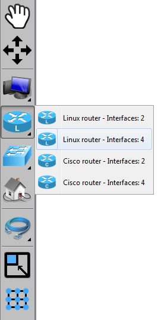
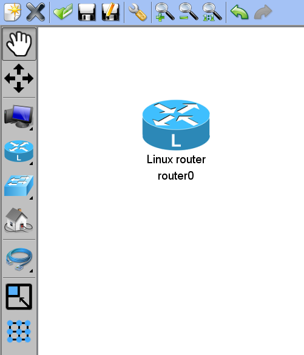
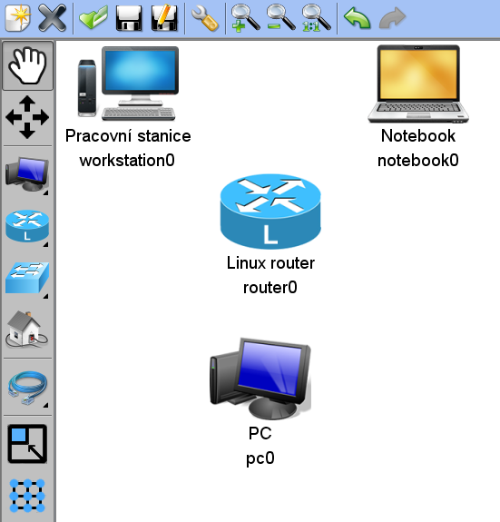

Tutorial 1: Network creation
- Welcome screen
- New project creation
- Placing components into board
- Connecting components with cables
- Network manipulation
- Setting network components properties
- Details settings
- Saving the project
Placing components into board
First, we start with choosing the right tool
Menu with tools
There is a tools menu on the left side of the screen. The tools are the following:
- Hand - tool for component manipulation (shortcut H)
- Move - tool for moving the whole draw panel in viewport (shortcut M)
- End devices - menu with end devices
- Routers - menu with routers
- Switches - menu with switches
- Real computer - component representing real pc
- Cables - menu with cables
- Resize panel to components - tool for making the draw panel smaller
- Align to grid - aligns components to invisible grid
If you see small black triangle on the bottom left of the button, than there is a submenu for this button. You can access it with right mouse button. You can choose current tool in submenu with left mouse button

We start with tool selection. Open the Routers menu with right mouse button and choose Linux router with four interfaces.
Placing the component
Move the mouse on the draw panel and using left mouse button place the Router. The router will be at the position you clicked with the mouse.
Than we add some more components, for example like this:
Next part of this tutorial is: Connecting components with cables.